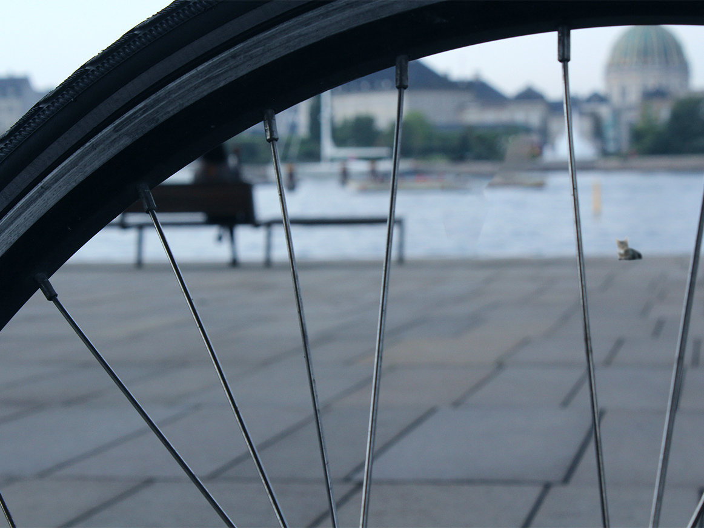

Dette er et udkast til vores første afleveringsopgave på CPHbusiness. Det blev dog ikke den jeg endte med at aflevere.
Opgave beskrivelsen
Billedet/billederne skal behandles i Photoshop således at der som minimum er foretaget følgende:
- Fjern et element: Noget på billedet skal fjernes og baggrunden (hullet bagved) skal fyldes ud så det passer med billedet.
- Tilføj et element: Noget som ikke oprindeligt var i billedet, skal sættes ind, så det ser ud som om, det var der fra starten.
- Ret billedets lysforhold eller tilfør billedet en stemning ved filter eller farvetoning
- Beskæring og evt opretning (lodret/vandret) af billede.
- Format og størrelsen: billedet skal være i format 4:3 og gemmes så størrelsen er ≦ 1 M pixel
Løsningen
Jeg har lagt et blåligt filter på og fjernet en cykel og tilføjet en kat.
Så har jeg beskæret billedet så det blev 4:3 og ændret pixel størrelsen.